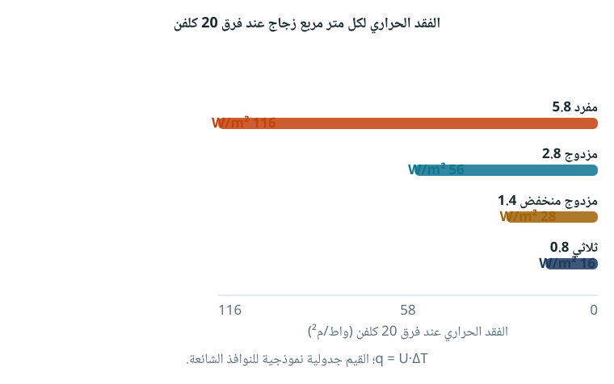

الزجاج المفرد لا يهرب الحرارة: يوصّلها
Why single glazing loses heat so fast
معامل الانتقال الحراري للزجاج المفرد نحو 5.8، وللثلاثي المنخفض الانبعاثية 0.8. عند فرق 20 كلفن يعني ذلك 116 واط/م² مقابل 16: سبعة أضعاف في النافذة نفسها.
النافذة أضعف نقطة في الجدار ليس لأن الزجاج رقيق، بل لأن سطحه الداخلي يلامس هواء الغرفة فيتشكّل عليه غشاء حراري رقيق جدًا. الزجاج الثاني يضيف طبقة هواء ساكنة تعمل كعزل، والطلاء المنخفض الانبعاثية يقلّل الإشعاع بين اللوحين. الرقم الذي يلخّص ذلك هو معامل الانتقال الحراري الكلي.
الآلية
كيف يحدث الأمر على مستوى الجسيمات أو المتغيّرات المباشرة
المقاومة الحرارية للنافذة ثلاث مقاومات على التوالي: غشاء داخلي، ثم الزجاج وفراغه، ثم غشاء خارجي. مقاومة الفراغ الغازي هي الأكبر حين يكون ساكنًا، ولهذا يُملأ بالأرغون: غاز أثقل يقلّل الحمل بين اللوحين. الطلاء المنخفض الانبعاثية يخفض التبادل الإشعاعي الذي يتجاوز الغاز ولا يتأثر به.
الأرقام والوحدات
العلاقات والوحدات والنطاقات العددية التي تسند الشرح
q″ = U·ΔT. عند ΔT = 20 كلفن: زجاج مفرد U = 5.8 يعطي 116 واط/م²، ومزدوج 2.8 يعطي 56، ومزدوج منخفض الانبعاثية 1.4 يعطي 28، وثلاثي 0.8 يعطي 16. لنافذة 2 م² يعني الفرق بين المفرد والثلاثي تجنّب 200 واط في أبرد ساعة — أي 4.8 كيلوواط·ساعة في اليوم إن استمر الفرق.
الفرق الدقيق
المفهوم الملتبس الذي يُخلَط به، وأين ينفصلان
U ليس مقاومة: U هو مقلوبها. وليس «كفاءة» بنسبة مئوية، فقيمة U = 2.8 لا تعني 2.8% ولا 97.2%. وحدة القياس واط/(م²·كلفن) تقول إن الرقم تدفق حراري لكل متر مربع ولكل درجة فرق، ولهذا يُضرب في المساحة والفرق معًا.
حدود التعريف
أين ينكسر التعريف أو النموذج وما الذي لا يفسّره
الرقم جدولي ولا يشمل إطار النافذة ولا التسريب الهوائي، وكلاهما قد يهيمن على الفقد الحقيقي في التركيب السيئ. ولا يشمل الشمس: نافذة عالية U قد تكون أفضل حراريًا في الشتاء المشمس لأنها تكسب حرارة. كما أن الأفلام والستائر تغيّر الغشاء الداخلي فلا يبقى الرقم صالحًا.

| الكمية | القيمة | المصدر |
|---|---|---|
| فقد الزجاج المفرد عند فرق 20 كلفن | 116 W/m² | [1] |
| فقد الزجاج الثلاثي عند الفرق نفسه | 16 W/m² | [1] |
| نسبة الفقد بين المفرد والثلاثي | 7.2 مرة | [2] |
| معامل الزجاج المزدوج | 2.8 W/(m²·K) | [3] |
المصادر
- 1 Engineering ToolBox — Overall Heat Transfer Coefficients — Engineering ToolBox. www.engineeringtoolbox.com/overall-heat-transfer-coefficient-d_434.html · اطُّلع عليه 2026-11-16
- 2 OpenStax, College Physics 2e — Conduction — OpenStax. openstax.org/books/college-physics-2e/pages/14-5-conduction · اطُّلع عليه 2026-11-16
- 3 OpenStax, College Physics 2e — Heat Transfer Methods — OpenStax. openstax.org/books/college-physics-2e/pages/14-4-heat-transfer-methods · اطُّلع عليه 2026-11-16
راجعه: مراجعة آلية — ديوان المعرفة (أرقام محسوبة + مصادر متحققة) 2026-11-16 · 2026-11-16 · آخر تحديث 2026-11-16
رجوع إلى المقالات